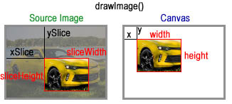
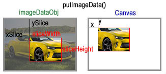

Updated ( 2018-11-05 / 2018-11-29 )
MySite> Canvas> Image and Pixel Manipulation
| Method / Property | Description |
|---|---|
| new ImageData(Uint8ClampedArray, width, height) new ImageData(ImageData) |
returns an imageData object (properties : width / height / data), the data property contains a "Uint8ClampedArray" which describles the image as imageData |
|
canvasCtx2D.createImageData(width, height) canvasCtx2D.createImageData(imageDataObj) |
returns an imageData object (properties : width / height / data), the data property contains a "Uint8ClampedArray" which describles the image as imageData |
| canvasCtx2D.drawImage(media, xSlice, ySlice, sliceWidth, sliceHeight, x, y, width, height) | draws (Image, Video, SVG or Canvas) onto the canvas element (can slice part of the source / increas or decrease the size) |
| canvasCtx2D.getImageData(x, y, width, height) | returns an imageData object from the targeted canvas area (does not work on cross origin images) |
| canvasCtx2D.imageSmoothingEnabled = boolean | gets or sets the image smoothing protocol for the canvas context (default true) (Experimental Technology [2018-11-18]) |
| canvasCtx2D.putImageData(imageDataObj, x, y, xSlice, ySlice, sliceWidth, sliceHeight) | draws an imageData object onto the canvas (can slice part from it) |
| |
returns a Uint8ClampedArray typed array which holds the image data (every 4 values represent a pixel (rgba)) |
| |
returns the height of the "imageData" object |
| |
returns the width of the "imageData" object |
-
-
SYNTAX : canvasCtx2D.drawImage(media, xSlice, ySlice, sliceWidth, sliceHeight, x, y, width, height) // draws (Image, Video, SVG or Canvas) onto the canvas element (can slice part of the source / increas or decrease the size)
- media : media file to use (HTMLImage / SVGImage / HTMLVideo / CanvasElement)
- xSlice / ySlice : slice area start coordonates (x,y = top left corner)
- sliceWidth / sliceHeight : slice dimensions
- x / y : media coordonates on the canvas
- width / height : media size
canvasCtx2D.imageSmoothingEnabled = boolean // gets or sets the image smoothing protocol for the canvas context (default true) (Experimental Technology [2018-11-18])

<canvas id="demo" style="border:solid black 1px"></canvas>
<script>
var ctx = document.getElementById("demo").getContext("2d");
var img = new Image(); // create image element (this is an HTMLImage element)
img.src = "demo.jpg"; // load the image source
ctx.imageSmoothingEnabled = false; // disable the image smoothing protocol of the browser (default = true)
img.onload = function() { // -! waiting till the image is fully loaded (otherwise the page is loaded faster and the image is never displayed!)
ctx.drawImage(img, 10, 10); // image displayed as it is (takes the necessary space)
ctx.drawImage(img, 10, 10, 100, 100); // image stretched or compressed to fit with its full size into 100 X 100 pixels
ctx.drawImage(img, 100, 100, 50, 50, 10, 10, 100, 100); // 100, 100 is the (top, left) start slice coordinates
// 50, 50 is the slice dimensions from the source image
// 10, 10, 100, 100 are the display parameters onto the canvas // -! in this situation the sliced image is increased because the slice are is 50 X 50 but we display it as 100 X 100
}
</script>
<canvas id="drawImage_T1" style="border:solid black 1px;"></canvas>
<canvas id="drawImage_T2" style="border:solid black 1px;"></canvas>
<script>
var drawIMG = function() {
var ctx = document.getElementById("drawImage_T1").getContext("2d");
var ctx2 = document.getElementById("drawImage_T2").getContext("2d");
var img = new Image();
img.src = "Pictures/camaro.jpg";
img.addEventListener("load", () => { // event linstener waits untill the image is fully loaded
ctx.drawImage(img, 10, 10); // image drawn as it is
ctx2.drawImage(img, 10, 10, 280, 130); // image is compressed to the desired space (distorted)
});
}
drawIMG();
</script>
<canvas id="drawImage_T3" style="border:solid black 1px;"></canvas>
<script>
var imgSliceTest = function() {
var ctx = document.getElementById("drawImage_T3").getContext("2d");
var ctx2 = document.getElementById("drawImage_T4").getContext("2d");
ctx2.font = "20px sans-serif";
var img = new Image();
img.src = "Pictures/camaro.jpg";
img.onload = function() { // wait till the imag is fully loaded
ctx.drawImage(img, 30, 150, 50, 50, 10, 10, 50, 50); // slice and display the rear wheel (both slice and display dimensions are the same = no image distortion )
ctx.drawImage(img, 200, 160, 50, 50, 140, 10, 50, 50);
ctx2.drawImage(img, 280, 140, 50, 50, 10, 40, 280, 100); // the sliced area stretched (sliced area dimension = 50 X 50 / displayed as 280 X 100)
}
ctx2.font = "20px sans-serif";
ctx2.textBaseline = "top";
ctx2.textAlign = "center";
ctx2.fillText("Sliced Area Stretched", 150, 0,);
}
imgSliceTest();
</script>
<canvas id="canvasCanvas" style="border:solid black 1px;"></canvas>
<script>
var canvasCanvas = function() {
var ctx = document.getElementById("canvasCanvas").getContext("2d");
var getCanvas = document.getElementById("arcCanvas"); // get the source canvas element
ctx.drawImage(getCanvas, 75, 0); // display the source canvas
}
canvasCanvas();
</script>
<canvas id="imageSmooth" style="border:solid black 1px;"></canvas>
<script>
var smoothImg = function() {
var ctx = document.getElementById("imageSmooth").getContext("2d");
var img = new Image();
img.src = "lamp.jpg"
ctx.drawImage(img, 10, 10, 100, 100);
ctx.imageSmoothingEnabled = false; // image smoothing disabled
ctx.drawImage(img, 140, 10, 100, 100);
}
smoothImg();
</script>
- the "Uint8ClamptedArray" is a typed array (8 bit unsigned integers clamped between 0-255), as dataImage every 4 values in the sequence represent 1 pixel (rgba) on the image (default 0,0,0,0 black transparent)
SYNTAX : new ImageData(Uint8ClampedArray, width, height) // returns an imageData object (properties : width / height / data), the data property contains a "Uint8ClampedArray" which describles the image as imageData
new ImageData(ImageData) // returns a transparent black ImageData object with the dimensions of the passed ImageData object
canvasCtx2D.createImageData(width, height) // returns an imageData object (properties : width / height / data), the data property contains a "Uint8ClampedArray" which describles the image as imageData
canvasCtx2D.createImageData(imageDataObj)
- imageDataObj : imageData object does not copies the image data (only the "width" and "height" properties are copied)
canvasCtx2D.getImageData(x, y, width, height) // returns an imageData object from the targeted canvas area (does not work on cross origin images)
canvasCtx2D.putImageData(imageDataObj, x, y, xSlice, ySlice, sliceWidth, sliceHeight) // draws an imageData object onto the canvas (can slice part from it)
ImageData.prototype .width // returns the width of the "imageData" object
ImageData.prototype .height // returns the height of the "imageData" object
ImageData.prototype .data // returns a Uint8ClampedArray typed array which holds the image data (every 4 values represent a pixel (rgba))

<canvas id="demo" style="border:solid 1px black"></canvas>
<script>
var ctx = document.getElementById("demo").getContext("2d");
var img = new Image();
img.src = "demo.jpg";
ctx.drawImage(img, 10, 10); // draw image on canvas
var myImageData = ctx.getImageData(0, 0, 150, 150); // imageData object created from the first half of the canvas area
ctx.putImageData(myImageData, 150, 0); // print the imageData object on the second half on the canvas
ctx.putImageData(myImageData, 200, 0, 20, 20, 50, 50); // slice a part of the imageData image and print it on the canvas (20, 20 = slice coordinates on the imageData / 50, 50 = width and height of the sliced part)
var myImageData_A = ctx.createImageData(10, 10); // createn an empty imageData object (dimension 10 x 10, pixels are set to transparent black)
var myImageData_B = ctx.createImageData(myImageData); // -! this also creates an empty imageData object (only the dimension is set (150 x 150) but the imageData is transparent black [for some strange reasons])
myImageData // -> {data:[89999values], width:150, height:150} // imageData object (myImageData.data.length = (150 * 150) * 4))
</script> // data:[89999values] is an Uint8ClamptedArray representing the image (every 4 values is 1 pixel on the image (rgba))
<canvas id="imageData" style="border:solid black 1px;"></canvas>
<script>
var imageDataFunc = function() {
var ctx = document.getElementById("imageData").getContext("2d");
var imgData = ctx.createImageData(100, 100); // create imageData object
var imgData_length = imgData.data.length;
var filterAlpha = 0; // I use this to make sure every 4th (alpha chanel) data in the TypedArray is opaque
for(let i = 0; i < imgData_length; i++ ) {
filterAlpha++;
if (filterAlpha == 4) { // this condition makes sure that evey 4 data (alpha chanel) is fully opaque
imgData.data[i] = 255;
filterAlpha = 0;
} else {
imgData.data[i] = Math.floor(Math.random() * (255 - 0)) + 0; // fromula returns a radom number between 0 and 255 which generates random colors
}
}
var imgData2 = ctx.createImageData(imgData); // the first imageData object is used to create the second one here (it only copies the dimensions NOt the image!)
ctx.putImageData(imgData, 10, 10); // draw the imageData object outo the canvas
ctx.putImageData(imgData2, 120, 10); // because this is an imageData copy the image itself is not copied only the dimension (for some reason hm... ???)
}
imageDataFunc();
</script>
<canvas id="imageDataConstructor" style="border:solid black 1px;" height="50"></canvas>
<script>
var imgDataFunc = function() {
var ctx = document.getElementById("imageDataConstructor").getContext("2d");
var imageData = new ImageData(30, 10); // image data object created by the constructor
for (let i = 0; i < (30 * 10) * 4; i++) { // draw fully opaque white pixels
imageData.data[i] = 255;
}
ctx.putImageData(imageData, 10, 10); // draw the image data onto the canvas
}
imgDataFunc();
</script>
Tested with Edge because the getImageData() method doesn't allow to get cross origin resources and Chrome sees local sites as cross origin [2018-11-18]
<canvas id="putImageData" style="border:solid black 1px;"></canvas>
<canvas id="putImageData2" style="border:solid black 1px;"></canvas>
<script>
var putFn = function() {
var ctx = document.getElementById("putImageData").getContext("2d");
var img = new Image();
img.src = "lamp.jpg";
ctx.fillStyle = "darkgreen";
ctx.fillRect(0, 0, 150, 150);
ctx.drawImage(img, 10, 10); // draw image on canvas
var getImage_Data = ctx.getImageData(0, 0, 75, 75); // recover the data what is painted on the canvas (as the canvas is drawn)
ctx.putImageData(getImage_Data, 200, 10); // paint the recovered imageData object on a different region
// putImageData -----------------------------------------
var ctx2 = document.getElementById("putImageData2").getContext("2d");
ctx2.putImageData(getImage_Data, 10, 10, 15, 15, 40, 40); // part of the imageData is painted (10, 10 = target coordinates / 15, 15 = coordinates from the imageData / 40, 40 = dimension on the imageData)
}
putFn();
</script>